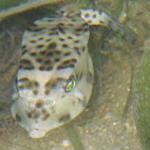
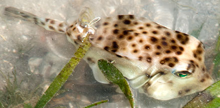
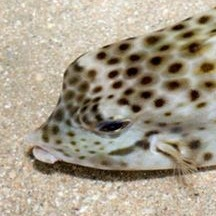

|
|
| fishes text index | photo index |
| Phylum Chordata > Subphylum Vertebrata > fishes > Family Ostraciidae |
| Shortnose
boxfish Rhynchostracion nasus Family Ostraciidae updated Sep 2020 Where seen? This strange boxy fish is sometimes seen on some of our shores. It is also called the Small nosed boxfish. It was previously called Ostracion nasus. Features: To 30cm, those seen about 10cm long. Body cubical boxy, which is enclosed in a protective hard shell (carapace) made up of bony plates with gaps for the various tiny fins, the tail and the mouth. No horns. A small bump on the 'nose' above the upper lip and a ridge along the middle of the back. Body pattern of hexagons with brown spots. |
 Cyrene Reef, Jun 09 |
 Cyrene Reef, Jun 09 |
|
| Toxic box: It is said to be toxic. It is probably one of the species that secretes a powerful toxin on the skin (called ostracitoxin). This toxin is poisonous to other fishes and can even kill the boxfish itself if it is confined in an aquarium. Thus they are not recommended for aquariums. |
| Shortnose boxfishes on Singapore shores |
On wildsingapore
flickr
|
| Other sightings on Singapore shores |
 Pulau Sekudu, Jun 14 |
||
{kind=link}
Links
References
|